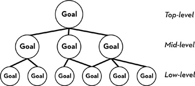
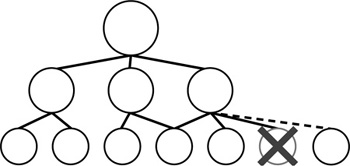

I recently gave a lecture on grit to undergraduates at the Wharton School of Business. Even before I’d cleared my notes from the podium, an aspiring entrepreneur rushed to introduce himself.
He was charming—full of the energy and enthusiasm that makes teaching young people so rewarding. Breathlessly, he told me a story meant to illustrate his own prodigious grit. Earlier that year, he’d raised thousands of dollars for his start-up, going to heroic lengths to do so, and pulling several all-nighters in the process.
I was impressed and said so. But I hastened to add that grit is more about stamina than intensity. “So, if you’re working on that project with the same energy in a year or two, email me. I can say more about your grit then.”
He was puzzled. “Well, I might not be working on the same thing in a few years.”
Good point. Lots of ventures that seem promising at the start turn out badly. Lots of optimistic business plans end up in the discard bin.
“Okay, so maybe this particular start-up won’t be what you’re working on. But if you’re not working in the same industry, if you’re on to some totally unrelated pursuit, then I’m not sure your story illustrates grit.”
“You mean, stay in one company?” he asked.
“Not necessarily. But skipping around from one kind of pursuit to another—from one skill set to an entirely different one—that’s not what gritty people do.”
“But what if I move around a lot and, while I’m doing that, I’m working incredibly hard?”
“Grit isn’t just working incredibly hard. That’s only part of it.”
Pause.
“Why?”
“Well, for one thing, there are no shortcuts to excellence. Developing real expertise, figuring out really hard problems, it all takes time—longer than most people imagine. And then, you know, you’ve got to apply those skills and produce goods or services that are valuable to people. Rome wasn’t built in a day.”
He was listening, so I continued.
“And here’s the really important thing. Grit is about working on something you care about so much that you’re willing to stay loyal to it.”
“It’s doing what you love. I get that.”
“Right, it’s doing what you love, but not just falling in love—staying in love.”
How gritty are you? Below is a version of the Grit Scale I developed for my study at West Point and which I used in other studies described in this book. Read each sentence and, on the right, check off the box that makes sense. Don’t overthink the questions. Instead, just ask yourself how you compare—not just to your coworkers, friends, or family—but to “most people.”
|
Not much like me |
Somewhat like me |
Mostly like me |
Very much like me |
|
1. New ideas and projects sometimes distract me from previous ones. |
5 |
4 |
3 |
2 |
1 |
2. Setbacks don’t discourage me. I don’t give up easily. |
1 |
2 |
3 |
4 |
5 |
3. I often set a goal but later choose to pursue a different one. |
5 |
4 |
3 |
2 |
1 |
4. I am a hard worker. |
1 |
2 |
3 |
4 |
5 |
5. I have difficulty maintaining my focus on projects that take more than a few months to complete. |
5 |
4 |
3 |
2 |
1 |
6. I finish whatever I begin. |
1 |
2 |
3 |
4 |
5 |
7. My interests change from year to year. |
5 |
4 |
3 |
2 |
1 |
8. I am diligent. I never give up. |
1 |
2 |
3 |
4 |
5 |
9. I have been obsessed with a certain idea or project for a short time but later lost interest. |
5 |
4 |
3 |
2 |
1 |
10. I have overcome setbacks to conquer an important challenge. |
1 |
2 |
3 |
4 |
5 |
To calculate your total grit score, add up all the points for the boxes you checked and divide by 10. The maximum score on this scale is 5 (extremely gritty), and the lowest possible score is 1 (not at all gritty).
You can use the chart below to see how your scores compare to a large sample of American adults.I
Percentile |
Grit Score |
10% |
2.5 |
20% |
3.0 |
30% |
3.3 |
40% |
3.5 |
50% |
3.8 |
60% |
3.9 |
70% |
4.1 |
80% |
4.3 |
90% |
4.5 |
95% |
4.7 |
99% |
4.9 |
Keep in mind that your score is a reflection of how you see yourself right now. How gritty you are at this point in your life might be different from how gritty you were when you were younger. And if you take the Grit Scale again later, you might get a different score. As this book will continue to show, there is every reason to believe that grit can change.
Grit has two components: passion and perseverance. If you want to dig a little deeper, you can calculate separate scores for each component: For your passion score, add up your points for the odd-numbered items and divide by 5. For your perseverance score, add up your points for the even-numbered items and divide by 5.
If you scored high on passion, you probably scored high on perseverance, too. And vice versa. Still, I’ll take a guess that your perseverance score is a wee bit higher than your passion score. This isn’t true for all people, but it’s true for most people I’ve studied. For instance, I took the scale while writing this chapter, and I scored 4.6 overall. My perseverance score was 5.0, and my passion score was only 4.2. Strange as it sounds, staying focused on consistent goals over time is more of a struggle for me than working hard and bouncing back from setbacks.
This consistent pattern—perseverance scores more often topping passion scores—is a clue that passion and perseverance aren’t exactly the same thing. In the rest of this chapter, I’ll explain how they differ and show how to understand them as two parts of a whole.
While taking the Grit Scale, you might have noticed that none of the passion questions asked how intensely you’re committed to your goals. This may seem odd, because the word passion is often used to describe intense emotions. For a lot of people, passion is synonymous with infatuation or obsession. But in interviews about what it takes to succeed, high achievers often talk about commitment of a different kind. Rather than intensity, what comes up again and again in their remarks is the idea of consistency over time.
For instance, I’ve heard of chefs who grew up watching Julia Child on television and remained fascinated with cooking into adulthood. I’ve heard of investors whose curiosity about the financial markets is as keen in their fourth or fifth decade of investing as it was on their very first day of trading. I’ve heard of mathematicians who work on a problem—the same problem—day and night for years, without once deciding, “Oh, to heck with this theorem! I’m moving on to something else.” And that’s why the questions that generate your passion score ask you to reflect on how steadily you hold to goals over time. Is passion the right word to describe sustained, enduring devotion? Some might say I should find a better word. Maybe so. But the important thing is the idea itself: Enthusiasm is common. Endurance is rare.
Consider, for example, Jeffrey Gettleman. For about a decade, Jeff has been the East Africa bureau chief for the New York Times. In 2012, he won the Pulitzer Prize for International Reporting for his coverage of conflict in East Africa. He’s a bit of a celebrity in the world of international journalism, widely admired for his courage to pursue stories that put his life at risk and, also, for his willingness to unflinchingly report events that are unthinkably horrific.
I met Jeff when we were in our early twenties. At the time, both of us were pursuing master’s degrees at Oxford University. For me, this was before McKinsey, before teaching, and before becoming a psychologist. For Jeff, this was before he’d written his first news story. I think it’s fair to say that, back then, neither of us knew quite what we wanted to be when we grew up—and we were both trying desperately to figure it out.
I caught up with Jeff on the phone recently. He was in Nairobi, his home base between trips to other parts of Africa. Every few minutes, we had to ask each other if we could still be heard. After reminiscing about our classmates and trading news about our children, I asked Jeff to reflect on the idea of passion and how it had played out in his life.
“For a very long time, I’ve had a very clear sense of where I wanted to be,” Jeff told me. “And that passion is to live and work in East Africa.”
“Oh, I didn’t know—I assumed your passion was journalism, not a certain area of the world. If you could only be a journalist or only live in East Africa, which would you choose?”
I expected Jeff to pick journalism. He didn’t.
“Look, journalism is a great fit for me. I’ve always gravitated towards writing. I’ve always been okay being in new situations. Even the confrontational side of journalism—that speaks to my personality. I like to challenge authority. But I think journalism has been, in a sense, a means to an end.”
Jeff’s passion emerged over a period of years. And it wasn’t just a process of passive discovery—of unearthing a little gem hidden inside his psyche—but rather of active construction. Jeff didn’t just go looking for his passion—he helped create it.
Moving to Ithaca, New York, from Evanston, Illinois, Jeff, at eighteen years old, could not have predicted his future career. At Cornell, he ended up majoring in philosophy, in part because “it was the easiest to fulfill the requirements.” Then, the summer after freshman year, he visited East Africa. And that was the beginning of the beginning: “I don’t know how to explain it. This place just blew my mind. There was a spirit here that I wanted to connect with, and I wanted to make it a part of my life.”
As soon as he got back to Cornell, Jeff started taking courses in Swahili, and after sophomore year, he took a year off to backpack around the world. During that trip, he returned to East Africa, experiencing the same wonder he’d felt the first time he visited.
Still, it wasn’t clear how he’d make a life there. How did he hit on journalism as a career path? A professor who admired Jeff’s writing suggested as much, and Jeff remembers thinking, “That is the dumbest idea I had heard . . . who wants to work for a boring newspaper?” (I remember thinking the same thing once about becoming a professor: Who wants to be a boring professor?) Eventually, Jeff did work for the student paper, the Cornell Daily Sun—but as a photographer, not a writer.
“When I got to Oxford, I was pretty lost academically. It was shocking to the Oxford professors that I didn’t really know what I wanted to do. They were like, ‘Why are you here? This is a serious place. You should have a firm sense of what you want to study or you shouldn’t be here.’ ”
My guess at the time was that Jeff would pursue photojournalism. He reminded me of Robert Kincaid, the worldly, wise photographer played by Clint Eastwood in The Bridges of Madison County, which was released around the time we became friends. In fact, I can still remember the photographs Jeff showed me twenty years ago. I thought they were from National Geographic, but he’d actually taken them himself.
By his second year at Oxford, he figured out that journalism was an even better fit: “Once I learned more about being a journalist and how that could get me back to Africa, and how that actually would be fun, and I could write more creatively than I first imagined journalism was, then I was like, ‘Screw it, this is what I’m going to do.’ I set out a very deliberate path that was possible, because the journalism industry was very hierarchical, and it was clear how to get from A to B to C to D, et cetera.”
Step A was writing for Oxford’s student newspaper, Cherwell. Step B was a summer internship at a small paper in Wisconsin. Step C was the St. Petersburg Times in Florida on the Metro beat. Step D was the Los Angeles Times. Step E was the New York Times as a national correspondent in Atlanta. Step F was being sent overseas to cover war stories, and in 2006—just over a decade since he’d set himself the goal—he finally reached step G: becoming the New York Times’ East Africa bureau chief.
“It was a really winding road that took me to all kinds of places. And it was difficult, and discouraging, and demoralizing, and scary, and all the rest. But eventually, I got here. I got exactly where I wanted to be.”
As for so many other grit paragons, the common metaphor of passion as fireworks doesn’t make sense when you think of what passion means to Jeff Gettleman. Fireworks erupt in a blaze of glory but quickly fizzle, leaving just wisps of smoke and a memory of what was once spectacular. What Jeff’s journey suggests instead is passion as a compass—that thing that takes you some time to build, tinker with, and finally get right, and that then guides you on your long and winding road to where, ultimately, you want to be.
Seattle Seahawks coach Pete Carroll puts it this way: “Do you have a life philosophy?”
For some of us, the question makes no sense. We might say: Well, I have a lot of things I’m pursuing. A lot of goals. A lot of projects. Which do you mean?
But others have no problem answering with conviction: This is what I want.
Everything becomes a bit clearer when you understand the level of the goal Pete is asking about. He’s not asking about what you want to get done today, specifically, or even this year. He’s asking what you’re trying to get out of life. In grit terms, he’s asking about your passion.
Pete’s philosophy is: Do things better than they have ever been done before. Like with Jeff, it took a while to figure out what, in the broader sense, he was aiming for. The pivotal moment came at a low point in his coaching career: just after getting fired as head coach of the New England Patriots. This was the first and only year in his life when Pete wasn’t playing or coaching football. At that juncture, one of his good friends urged him to consider something more abstract than which job to take next: “You’ve got to have a philosophy.”
Pete realized he didn’t have one and needed to: “If I was ever going to get the chance to run an organization again, I would have to be prepared with a philosophy that would drive all my actions.” Pete did a lot of thinking and reflecting: “My life in the next weeks and months was filled with writing notes and filling binders.” At the same time, he was devouring the books of John Wooden, the legendary UCLA basketball coach who won a record-setting ten national championships.
Like a lot of coaches, Pete had already read Wooden. But this time, he was reading Wooden and understanding, at a much deeper level, what the coaching icon had to say. And the most important thing Wooden said was that, though a team has to do a million things well, figuring out the overarching vision is of utmost importance.
Pete realized in that moment that particular goals—winning a particular game, or even a seasonal championship, or figuring out this element of the offensive lineup, or the way to talk to players—needed coordination, needed purpose: “A clear, well-defined philosophy gives you the guidelines and boundaries that keep you on track,” he said.
One way to understand what Pete is talking about is to envision goals in a hierarchy.

At the bottom of this hierarchy are our most concrete and specific goals—the tasks we have on our short-term to-do list: I want to get out the door today by eight a.m. I want to call my business partner back. I want to finish writing the email I started yesterday. These low-level goals exist merely as means to ends. We want to accomplish them only because they get us something else we want. In contrast, the higher the goal in this hierarchy, the more abstract, general, and important it is. The higher the goal, the more it’s an end in itself, and the less it’s merely a means to an end.
In the diagram I’ve sketched out here, there are just three levels. That’s an oversimplification. Between the lowest and the highest level might be several layers of mid-level goals. For instance, getting out the door by eight a.m. is a low-level goal. It only matters because of a mid-level goal: arriving at work on time. Why do you care about that? Because you want to be punctual. Why do you care about that? Because being punctual shows respect for the people with whom you work. Why is that important? Because you strive to be a good leader.
If in the course of asking yourself these “Why?” questions your answer is simply “Just because!” then you know you’ve gotten to the top of a goal hierarchy. The top-level goal is not a means to any other end. It is, instead, an end in itself. Some psychologists like to call this an “ultimate concern.” Myself, I think of this top-level goal as a compass that gives direction and meaning to all the goals below it.
Consider Hall of Fame pitcher Tom Seaver. When he retired in 1987 at the age of forty-two, he’d compiled 311 wins; 3,640 strikeouts; 61 shutouts; and a 2.86 earned run average. In 1992, when Seaver was elected to the Hall of Fame, he received the highest-ever percentage of votes: 98.8 percent. During his twenty-year professional baseball career, Seaver aimed to pitch “the best I possibly can day after day, year after year.” Here is how that intention gave meaning and structure to all his lower-order goals:
Pitching . . . determines what I eat, when I go to bed, what I do when I’m awake. It determines how I spend my life when I’m not pitching. If it means I have to come to Florida and can’t get tanned because I might get a burn that would keep me from throwing for a few days, then I never go shirtless in the sun. . . . If it means I have to remind myself to pet dogs with my left hand or throw logs on the fire with my left hand, then I do that, too. If it means in the winter I eat cottage cheese instead of chocolate chip cookies in order to keep my weight down, then I eat cottage cheese.
The life Seaver described sounds grim. But that’s not how Seaver saw things: “Pitching is what makes me happy. I’ve devoted my life to it. . . . I’ve made up my mind what I want to do. I’m happy when I pitch well so I only do things that help me be happy.”
What I mean by passion is not just that you have something you care about. What I mean is that you care about that same ultimate goal in an abiding, loyal, steady way. You are not capricious. Each day, you wake up thinking of the questions you fell asleep thinking about. You are, in a sense, pointing in the same direction, ever eager to take even the smallest step forward than to take a step to the side, toward some other destination. At the extreme, one might call your focus obsessive. Most of your actions derive their significance from their allegiance to your ultimate concern, your life philosophy.
You have your priorities in order.
Grit is about holding the same top-level goal for a very long time. Furthermore, this “life philosophy,” as Pete Carroll might put it, is so interesting and important that it organizes a great deal of your waking activity. In very gritty people, most mid-level and low-level goals are, in some way or another, related to that ultimate goal. In contrast, a lack of grit can come from having less coherent goal structures.
Here are a few ways a lack of grit can show itself. I’ve met many young people who can articulate a dream—for example, to be a doctor or to play basketball in the NBA—and can vividly imagine how wonderful that would be, but they can’t point to the mid-level and lower-level goals that will get them there. Their goal hierarchy has a top-level goal but no supporting mid-level or low-level goals:
This is what my good friend and fellow psychologist Gabriele Oettingen calls “positive fantasizing.” Gabriele’s research suggests that indulging in visions of a positive future without figuring out how to get there, chiefly by considering what obstacles stand in the way, has short-term payoffs but long-term costs. In the short-term, you feel pretty great about your aspiration to be a doctor. In the long-term, you live with the disappointment of not having achieved your goal.
Even more common, I think, is having a bunch of mid-level goals that don’t correspond to any unifying, top-level goal:
Or having a few competing goal hierarchies that aren’t in any way connected with each other:
To some extent, goal conflict is a necessary feature of human existence. For instance, I have one goal hierarchy as a professional and another as a mother. Even Tom Seaver admits that the travel and practice schedule of a professional baseball player made it hard to spend as much time with his wife and children as he would have liked. So, though pitching was his professional passion, there were other goal hierarchies that obviously mattered to him.
Like Seaver, I have one goal hierarchy for work: Use psychological science to help kids thrive. But I have a separate goal hierarchy that involves being the best mother I can be to my two daughters. As any working parent knows, having two “ultimate concerns” isn’t easy. There seems never to be enough time, energy, or attention to go around. I’ve decided to live with that tension. As a young woman, I considered alternatives—not having my career or not raising a family—and decided that, morally, there was no “right decision,” only a decision that was right for me.
So, the idea that every waking moment in our lives should be guided by one top-level goal is an idealized extreme that may not be desirable even for the grittiest of us. Still, I would argue that it’s possible to pare down long lists of mid-level and low-level work goals according to how they serve a goal of supreme importance. And I think one top-level professional goal, rather than any other number, is ideal.
In sum, the more unified, aligned, and coordinated our goal hierarchies, the better.
Warren Buffett—the self-made multibillionaire whose personal wealth, acquired entirely within his own lifetime, is roughly twice the size of Harvard University’s endowment—reportedly gave his pilot a simple three-step process for prioritizing.
The story goes like this: Buffett turns to his faithful pilot and says that he must have dreams greater than flying Buffett around to where he needs to go. The pilot confesses that, yes, he does. And then Buffett takes him through three steps.
First, you write down a list of twenty-five career goals.
Second, you do some soul-searching and circle the five highest-priority goals. Just five.
Third, you take a good hard look at the twenty goals you didn’t circle. These you avoid at all costs. They’re what distract you; they eat away time and energy, taking your eye from the goals that matter more.
When I first heard this story, I thought, Who could have as many as twenty-five different career goals? That’s kind of ridiculous, isn’t it? Then I started writing down on a piece of lined paper all of the projects I’m currently working on. When I got to line thirty-two, I realized that I could benefit from this exercise.
Interestingly, most of the goals I spontaneously thought of were mid-level goals. People generally default to that level of goal when they’re asked to write down a number of goals, not just one.
To help me prioritize, I added columns that allowed me to sort out how interesting and important these projects were. I rated each goal on a scale from 1 to 10, from least to most interesting and then again from least to most important. I multiplied these numbers together to get a number from 1 to 100. None of my goals had an “interest x importance” rating as high as 100, but none were as low as 1, either.
Then I tried to take Buffett’s advice and circle just a few of the most interesting and important goals, relegating the rest to the avoid-at-all-cost category.
I tried, but I just couldn’t do it.
After a day or so of wondering who was right—me or Warren Buffett—I realized that a lot of my goals were, in fact, related to one another. The majority, in fact, were means to ends, setting me up to make progress toward one ultimate goal: helping kids achieve and thrive. There were only a few professional goals for which this wasn’t true. Reluctantly, I decided to put those on the avoid-at-all-cost list.
Now, if I could ever sit down with Buffett and go through my list with him (which is unlikely, since I doubt my needs rate a place in his goal hierarchy), he would surely tell me that the point of this exercise is to face the fact that time and energy are limited. Any successful person has to decide what to do in part by deciding what not to do. I get that. And I still have a ways to go on that count.
But I would also say that conventional prioritizing isn’t enough. When you have to divide your actions among a number of very different high-level career goals, you’re extremely conflicted. You need one internal compass—not two, three, four, or five.
Frank Modell, the New Yorker, July 7, 1962, The New Yorker Collection/The Cartoon Bank.
So, to Buffett’s three-step exercise in prioritizing, I would add an additional step: Ask yourself, To what extent do these goals serve a common purpose? The more they’re part of the same goal hierarchy—important because they then serve the same ultimate concern—the more focused your passion.
If you follow this method of prioritization, will you become a Hall of Fame pitcher or earn more money than anyone else in history? Probably not. But you’ll stand a better chance of getting somewhere you care about—a better chance of moving closer to where you want to be.
When you see your goals organized in a hierarchy, you realize that grit is not at all about stubbornly pursuing—at all costs and ad infinitum—every single low-level goal on your list. In fact, you can expect to abandon a few of the things you’re working very hard on at this moment. Not all of them will work out. Sure, you should try hard—even a little longer than you might think necessary. But don’t beat your head against the wall attempting to follow through on something that is, merely, a means to a more important end.
I thought about how important it is to know how low-level goals fit into one’s overall hierarchy when I listened to Roz Chast, the celebrated New Yorker cartoonist, give a talk at the local library. She told us her rejection rate is, at this stage in her career, about 90 percent. She claimed that it used to be much, much higher.
I called Bob Mankoff, the cartoon editor for the New Yorker, to ask how typical that number is. To me, it seemed shockingly high. Bob told me that Roz was indeed an anomaly. Phew! I thought. I didn’t want to think about all the cartoonists in the world getting rejected nine times out of ten. But then Bob told me that most cartoonists live with even more rejection. At his magazine, “contract cartoonists,” who have dramatically better odds of getting published than anyone else, collectively submit about five hundred cartoons every week. In a given issue, there is only room, on average, for about seventeen of them. I did the math: that’s a rejection rate of more than 96 percent.
“Holy smokes! Who would keep going when the odds are that grim?”
Well, for one: Bob himself.
Bob’s story reveals a lot about how dogged perseverance toward a top-level goal requires, paradoxically perhaps, some flexibility at lower levels in the goal hierarchy. It’s as if the highest-level goal gets written in ink, once you’ve done enough living and reflecting to know what that goal is, and the lower-level goals get written in pencil, so you can revise them and sometimes erase them altogether, and then figure out new ones to take their place.
Here’s my not-at-all-New Yorker–quality drawing to show what I mean:
The low-level goal with the angry-looking X through it has been blocked. It’s a rejection slip, a setback, a dead end, a failure. The gritty person will be disappointed, or even heartbroken, but not for long.
Soon enough, the gritty person identifies a new low-level goal—draws another cartoon, for example—that serves the same purpose.

One of the mottos of the Green Berets is: “Improvise, adapt, overcome.” A lot of us were told as children, “If at first you don’t succeed, try, try again.” Sound advice, but as they say “try, try again, then try something different.” At lower levels of a goal hierarchy, that’s exactly what’s needed.
Here’s Bob Mankoff’s story:
Like Jeff Gettleman, the New York Times East Africa bureau chief, Bob didn’t always have a clearly defined passion. As a child, Bob liked to draw, and instead of attending his local high school in the Bronx, he went to the LaGuardia High School of Music and Art, later fictionalized in the movie Fame. Once there, though, he got a look at the competition and was intimidated.
“Being exposed to real drawing talent,” Bob recalls, “made mine wither. I didn’t touch a pen, pencil, or paintbrush for three years after graduating.” Instead, he enrolled at Syracuse University, where he studied philosophy and psychology.
In his senior year, he bought a book called Learning to Cartoon by the legendary Syd Hoff, an exemplar of the “effort counts twice” maxim. Over his lifetime, Hoff contributed 571 cartoons to the New Yorker, wrote and illustrated more than sixty children’s books, drew two syndicated comic strips, and contributed literally thousands of drawings and cartoons to other publications. Hoff’s book opens cheerily with “Is it hard becoming a cartoonist? No, it isn’t. And to prove it, I’ve written this book. . . .” It ends with a chapter called “How to Survive Rejection Slips.” In between are lessons on composition, perspective, the human figure, facial expressions, and so on.
Bob used Hoff’s advice to create twenty-seven cartoons. He walked from one magazine to another, trying to make a sale—but not the New Yorker, which didn’t see cartoonists in person. And he was, of course, summarily rejected by every editor he saw. Most asked him to try again, with more cartoons, the next week. “More?” Bob wondered. “How could anyone do more than twenty-seven cartoons?”
Before he could reread Hoff’s last chapter on rejection slips, Bob received notice that he was eligible to be drafted for combat in Vietnam. He had no great desire to go; in fact, he had a great desire not to. So he repurposed himself—quickly—as a graduate student in experimental psychology. Over the next few years, while running rats in mazes, he found time, when he could, to draw. Then, just before earning his doctorate, he had the realization that research psychology wasn’t his calling: “I remember thinking that my defining personality characteristic was something else. I’m the funniest guy you ever met—that’s the way I thought of myself—I’m funny.”
For a while, Bob considered two ways of making humor his career: “I said, okay, I’m going to do stand-up, or I’m going to be a cartoonist.” He threw himself into both with gusto: “All day I would write routines and then, at night, I would draw cartoons.” But over time, one of these two mid-level goals became more attractive than the other: “Stand-up was different back then. There weren’t really comedy clubs. I’d have to go to the Borscht Belt, and I didn’t really want to. . . . I knew my humor was not going to work like I wanted it to for these people.”
So Bob dropped stand-up comedy and devoted his entire energy to cartoons. “After two years of submitting, all I had to show for it were enough New Yorker rejection slips to wallpaper my bathroom.” There were small victories—cartoons sold to other magazines—but by that time Bob’s top-level goal had become a whole lot more specific and ambitious: He didn’t just want to be funny for a living, he wanted to be among the best cartoonists in the world. “The New Yorker was to cartooning what the New York Yankees were to baseball—the Best Team,” Bob explains. “If you could make that team, you too were one of the best.”
The piles of rejection slips suggested to Bob that “try, try again” was not working. He decided to do something different. “I went to the New York Public Library and I looked up all the cartoons back to 1925 that had ever been printed in the New Yorker.” At first, he thought maybe he didn’t draw well enough, but it was plain to see that some very successful New Yorker cartoonists were third-rate draftsmen. Then Bob thought that something might be awry with the length of his captions—too short or too long—but that possibility wasn’t supported, either. Captions were generally brief, but not always, and anyway, Bob’s didn’t seem unusual in that respect. Then Bob thought maybe he was missing the mark with his type of humor. No again: some successful cartoons were whimsical, some satirical, some philosophical, and some just interesting.
The one thing all the cartoons had in common was this: they made the reader think.
And here was another common thread: every cartoonist had a personal style that was distinctively their own. There was no single “best” style. On the contrary, what mattered was that style was, in some very deep and idiosyncratic way, an expression of the individual cartoonist.
Paging through, literally, every cartoon the New Yorker had ever published, Bob knew he could do as well. Or better. “I thought, ‘I can do this, I can do this.’ I had complete confidence.” He knew he could draw cartoons that would make people think, and he knew he could develop his own style: “I worked through various styles. Eventually I did my dot style.” The now-famous dot style of Bob’s cartoons is called stippling, and Bob had originally tried it out back in high school, when he discovered the French impressionist Georges Seurat.
After getting rejected from the New Yorker about two thousand times between 1974 and 1977, Bob sent in the cartoon, below. It was accepted.
Robert Mankoff, the New Yorker, June 20, 1977, The New Yorker Collection/The Cartoon Bank.
The next year, he sold thirteen cartoons to the New Yorker, then twenty-five the following year, then twenty-seven. In 1981, Bob received a letter from the magazine asking if he’d consider becoming a contract cartoonist. He said yes.
In his role as editor and mentor, Bob advises aspiring cartoonists to submit their drawings in batches of ten, “because in cartooning, as in life, nine out of ten things never work out.”
Indeed, giving up on lower-level goals is not only forgivable, it’s sometimes absolutely necessary. You should give up when one lower-level goal can be swapped for another that is more feasible. It also makes sense to switch your path when a different lower-level goal—a different means to the same end—is just more efficient, or more fun, or for whatever reason makes more sense than your original plan.
On any long journey, detours are to be expected.
However, the higher-level the goal, the more it makes sense to be stubborn. Personally, I try not to get too hung up on a particular rejected grant application, academic paper, or failed experiment. The pain of those failures is real, but I don’t dwell on them for long before moving on. In contrast, I don’t give up as easily on mid-level goals, and frankly, I can’t imagine anything that would change my ultimate aim, my life philosophy, as Pete might say. My compass, once I found all the parts and put it together, keeps pointing me in the same direction, week after month after year.
Long before I conducted the first interviews that put me on the trail of grit, a Stanford psychologist named Catharine Cox was, herself, cataloging the characteristics of high achievers.
In 1926, Cox published her findings, based on the biographical details of 301 exceptionally accomplished historical figures. These eminent individuals included poets, political and religious leaders, scientists, soldiers, philosophers, artists, and musicians. All lived and died in the four centuries prior to Cox’s investigation, and all left behind records of accomplishment worthy of documentation in six popular encyclopedias.
Cox’s initial goal was to estimate how smart each of these individuals were, both relative to one another and also compared to the rest of humanity. In pursuit of those estimates, she combed through the available evidence, searching for signs of intellectual precocity—and from the age and superiority of these accomplishments she reckoned each person’s childhood IQ. The published summary of this study—if you can call a book of more than eight hundred pages a summary—includes a case history for each of Cox’s 301, arranged in order from least to most intelligent.
According to Cox, the very smartest in the bunch was the philosopher John Stuart Mill, who earned an estimated childhood IQ score of 190 by learning Greek at age three, writing a history of Rome at age six, and assisting his father in correcting the proofs of a history of India at age twelve. The least intelligent in Cox’s ranking—whose estimated childhood IQs of 100 to 110 are just a hair above average for humanity—included the founder of modern astronomy, Nicolaus Copernicus; the chemist and physicist Michael Faraday; and the Spanish poet and novelist Miguel de Cervantes. Isaac Newton ranks squarely in the middle, with an IQ of 130—the bare minimum that a child needs in order to qualify for many of today’s gifted and talented programs.
From these IQ estimates, Cox concluded that, as a group, accomplished historical figures are smarter than most of us. No surprise there.
A more unexpected observation was how little IQ mattered in distinguishing the most from the least accomplished. The average childhood IQ of the most eminent geniuses, whom Cox dubbed the First Ten, was 146. The average IQ of the least eminent, dubbed the Last Ten, was 143. The spread was trivial. In other words, the relationship between intelligence and eminence in Cox’s sample was exceedingly slight.
Cox’s First Ten (Most Eminent Geniuses)
Sir Francis Bacon
Napoleon Bonaparte
Edmund Burke
Johann Wolfgang von Goethe
Martin Luther
John Milton
Isaac Newton
William Pitt
Voltaire
George Washington
Cox’s Last Ten (Least Eminent Geniuses)
Christian K. J. von Bunsen
Thomas Chalmers
Thomas Chatterton
Richard Cobden
Samuel Taylor Coleridge
Georges J. Danton
Joseph Haydn
Hugues-Félicité-Robert de Lamennais
Giuseppe Mazzini
Joachim Murat
If intellectual talent wasn’t the determinant of whether a person ascended to the First Ten or was relegated to the Last Ten, then what was? While poring over thousands of pages of biographical data, Cox and her assistant also evaluated sixty-seven different personality traits for a subset of one hundred geniuses. Cox deliberately chose a rainbow of traits—in fact, she covered the full range of what modern psychologists consider to be important—to allow for the fullest possible exploration of the differences that set apart the eminent from the rest of humanity and, further, the First Ten from the Last Ten.
For most of the sixty-seven indicators, Cox found only trivial differences between the eminent and the general population. For instance, eminence had little to do with extroversion, cheerfulness, or sense of humor. And not all the high achievers had earned high marks in school. Rather, what definitively set apart the eminent from the rest of humanity were a cluster of four indicators. Notably, these also distinguished the First Ten from the Last Ten—the super-eminent from the merely eminent. Cox grouped these together and called them “persistence of motive.”
Two indicators could easily be rephrased as passion items for the Grit Scale.
Degree to which he works with distant objects in view (as opposed to living from hand to mouth). Active preparation for later life. Working toward a definite goal.
Tendency not to abandon tasks from mere changeability. Not seeking something fresh because of novelty. Not “looking for a change.”
And the other two could easily be rewritten as perseverance items for the Grit Scale.
Degree of strength of will or perseverance. Quiet determination to stick to a course once decided upon.
Tendency not to abandon tasks in the face of obstacles. Perseverance, tenacity, doggedness.
In her summary comments, Cox concluded that “high but not the highest intelligence, combined with the greatest degree of persistence, will achieve greater eminence than the highest degree of intelligence with somewhat less persistence.”
However you scored on the Grit Scale, I hope it prompted self-reflection. It’s progress just clarifying your goals, and the extent to which they are—or aren’t—aligned toward a single passion of supreme importance. It’s also progress to better understand how well you’re currently able to persevere in the face of life’s rejection slips.
It’s a start. Let’s continue, in the next chapter, to see how grit can and does change. And, then, in the rest of the book, let’s learn how to accelerate that growth.
I. If, for example, you scored 4.1, you’re grittier than about 70 percent of the adults in our sample.